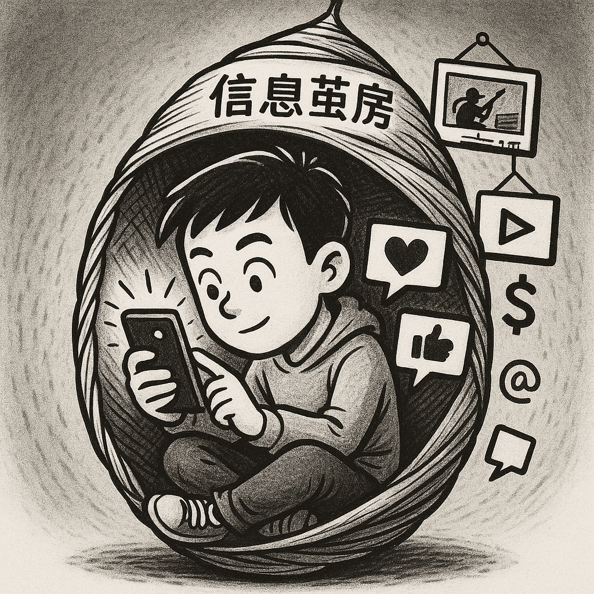

信息茧房：算法织就的蚕茧
点击卡片查看详细内容
信息茧房：算法织就的蚕茧
现象剖析
观点: 我们正被无形地困在"信息茧房"里，只接触自己感兴趣的同类信息，导致视野变窄。
事实: 平台算法是主要推手。它精准记录你的偏好，持续投喂相似内容，让你停留在舒适圈。这伴随着：
- 回声室效应 (Echo Chamber): 反复听到相似观点，使其被强化，可能走向偏激。
- 过滤气泡 (Filter Bubble): 算法过滤掉你不感兴趣的信息，让你错失新观点。
风险: 认知片面，欲望被不断加深（如游戏、消费），丧失发现新兴趣的机会。
生存小贴士
- 有意"破茧": 主动订阅或浏览不同领域的内容（科普、艺术等），给信息源透气。
- 求证与思辨: 遇到反复出现的观点时，主动搜索相反意见，锻炼批判性思维。
- 跨圈交流: 多与圈外朋友聊天，了解他们的关注点，拓宽视野，避免偏听偏信。